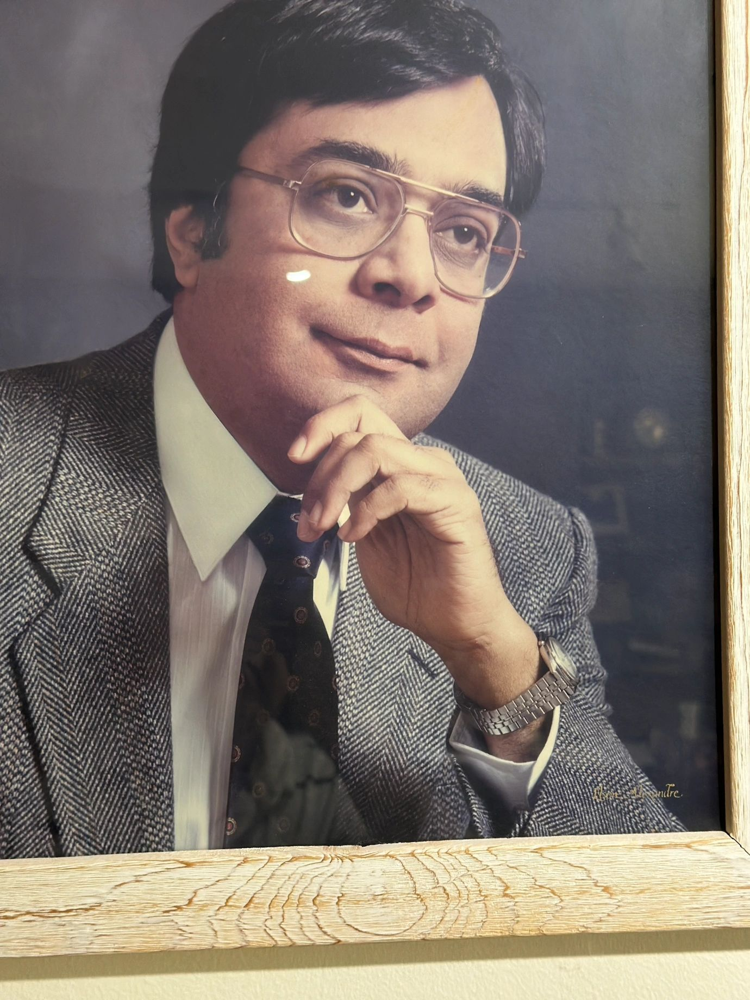

Dr. Yogi Ahluwalia
Former Chairman of Psychiatry at Mount Sinai Hospital Medical Center of Chicago, Dr. Ahluwalia has dedicated his career to advancing psychiatric care and improving patient outcomes. Dr. Ahluwalia is collaborating with us to build models for behavioral health and underserved communities.